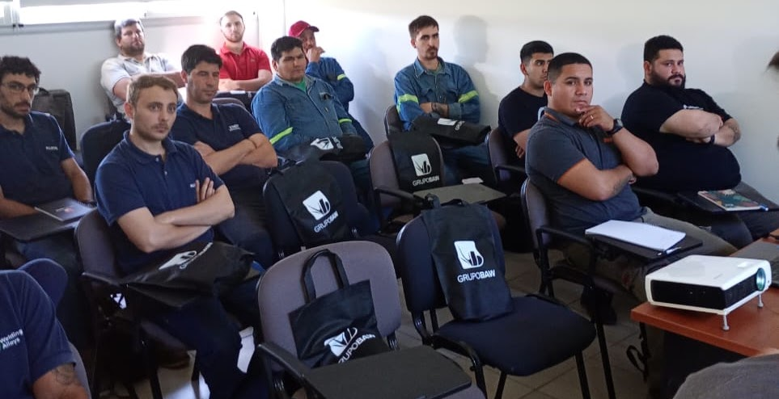

¿En qué consiste?
Realizamos visitas técnicas para relevar la situación actual, identificar oportunidades de mejora y diagnosticar necesidades específicas, con el objetivo de optimizar recursos, procesos y la gestión organizacional.
Asesoramiento técnico especializado para empresas e industrias.
← Volver a servicios
Realizamos visitas técnicas para relevar la situación actual, identificar oportunidades de mejora y diagnosticar necesidades específicas, con el objetivo de optimizar recursos, procesos y la gestión organizacional.
Secretaría de Vinculación e Innovación Tecnológica
Dirección: Colón 332, San Nicolás de los Arroyos, Buenos Aires, Argentina
Correo de asesoramiento: vinculacionfrsn@frsn.utn.edu.ar
Email general: vinculacionfrsn@frsn.utn.edu.ar